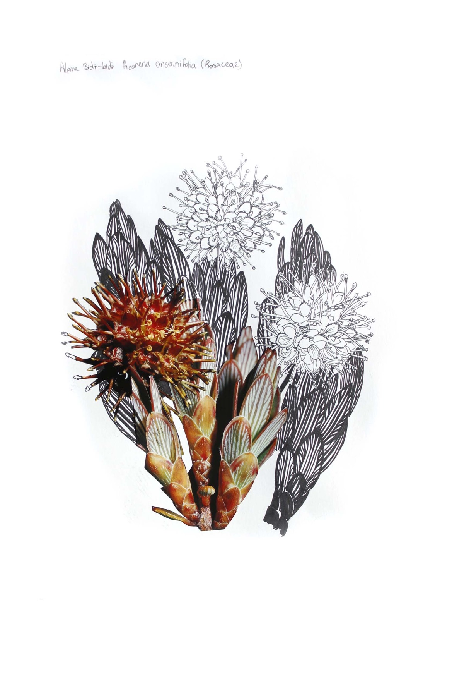
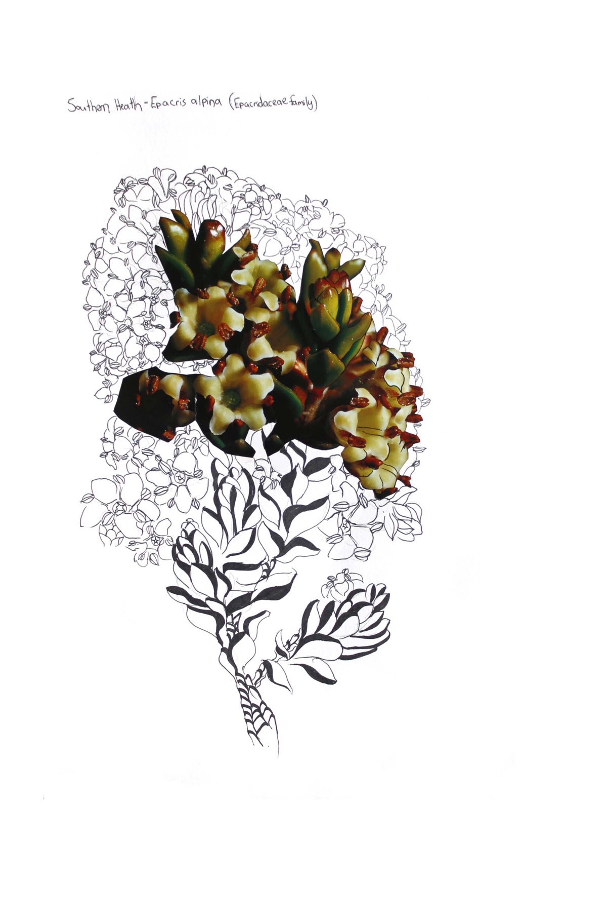
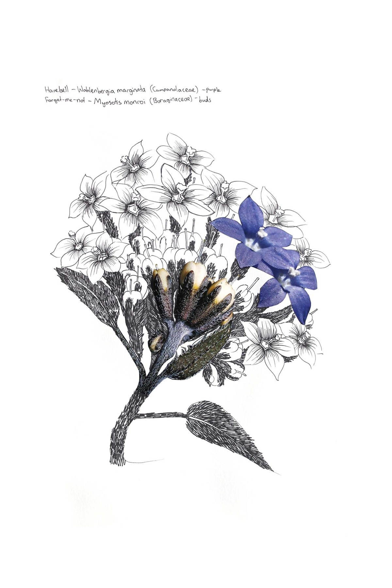

← Portfolio
Graftings
Botanical illustrations of non-existent species, based on the ancient practice of plant grafting as a method of combining desirable elements. Verstappen cuts up telephoto photographs of alpine plants native to Aotearoa New Zealand, building new forms through improvisational selections of textures and shapes — until impossible plants emerge.


